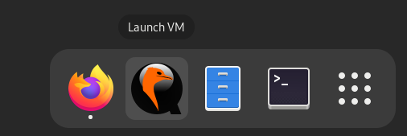
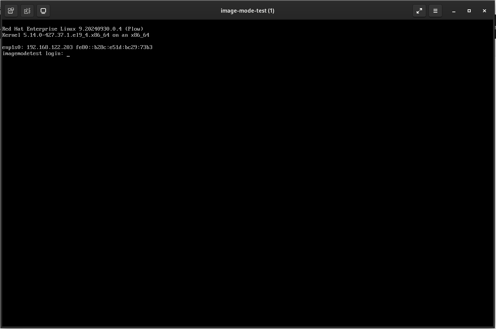

Creación de una máquina virtual con bootc containers
Descripción
En este caso práctico, crearemos una máquina virtual (VM) a partir de una imágen de contenedor.
Veremos cómo bootc aprovecha la tecnología de contenedores existente para:
-
Crear al aplicación en términos de su contenedor en tiempo de creación - el sistema no se cambia una vez desplegado.
-
Acceder automáticamente al registro de imágenes del contenedor desplegado para automáticamente actualizar el sistema.
-
Revertir el último cambio.
Creación de la primera imagen
La definición de un contenedor es prácticamente igual que la de un contenedor tradicional, lo que cambia es la cláusula FROM.
FROM registry.redhat.io/rhel9/rhel-bootc:9.4En nuestro ejemplo simplemente crearemos un contenedor que instala y configura un servidor apache para servir contenido mediante el protocolo HTTPS.
Bootc viene instalado en esas imágenes junto con un temporizador que periódicamente comprueba si existen actualizaciones y aplicarlas.
Para nuestro caso práctico vamos a crear un sistema con el temporizador comprobando si existen actualizaciones cada 30 segundos. Para esto sobreescribimos el temporizador en el momento de la creación de la imagen. Usamos la Containerfile:
FROM registry.redhat.io/rhel9/rhel-bootc:9.4
RUN /usr/bin/dnf -y install firewalld httpd php mod_ssl langpacks-es && /usr/bin/rm -f /etc/httpd/conf.d/welcome.conf && /usr/bin/systemctl enable httpd
COPY bootc-fetch-apply-updates.timer /lib/systemd/system/
COPY motd /etc/motd.d/
COPY hostname /etc/
COPY index.php /var/www/html
COPY httpd.key /etc/pki/tls/private/
COPY httpd.crt /etc/pki/tls/certs/
COPY cacert.pem /etc/pki/tls/certs/
COPY ssl.conf /etc/httpd/conf.d/
COPY public.xml /etc/firewalld/zones/
COPY registries.conf /etc/containers/
EXPOSE 443
CMD [ "/sbin/init" ]|
Como hemos comentado bootc containers se encuentra en Technology Preview y todavía hay opciones de configuración que se están implementando. Por ese motivo hemos tenido que recurrir a: |
|
El timer de systemd que se encarga de comprobar si hay actualizaciones: |
|
Abrimos una terminal y nos conectamos por ssh con el usuario demouser al host imagemode y creamos el contedor utilizando podman: |
En caso de bootable containers, no vamos a ejecutar esas imágenes sobre sistemas existentes sino vamos a crear sistemas con esos contenedores ya instalados.
Podemos crear sistemas de varias maneras: con imágenes para máquinas virtuales o también creando DVDs (ISO) que podemos utilizar para automáticamente instalar un servidor baremetal con kickstart.
Aquí vamos a utilizar bootc-image-builder para crear una VM de tipo KVM para ejecutarla en Linux utilizando libvirt.
El bootc-image-builder está diseñado para ejecutarse desde un contenedor. Creamos un archivo config.toml para configurar un usuario y usamos podman para ejecutar la aplicación con nuestro container. Mas información en bootc-image-builder.
Cuando termine la ejecución de este script se habrá creado el disco de la máquina virtual y quedará dentro del directorio output. El script se encarga de copiar dicho disco a una unidad compartida para poder ejecutar la máquina virtual.
|
Utilizando los comandos cd y ls puedes navegar por el directorio output para ver que se ha generado. |
En el portátil ya se encuentra creada una máquina virtual para ejecutar la máquina que hemos creado. El script anterior al copiar el disco creado a la carpeta compartida ha sobreescrito el disco existente y al arrancar la máquina virtual arrancará con el disco que hemos creado.
|
Para arrancar la máquina virtual con el disco creado en el entorno gráfico del portátil vamos al launcher situado abajo y pinchamos en Launch VM:

Una vez arrancada la máquina virtual:

|
Ahora podemos conectarnos a la máquina virtual que hemos creado y explorar.
|
Tenemos dos formas de conectarnos, nos podemos conectar por ssh utilizando las credenciales definidas en el fichero config.toml: Como en el fichero de configuración config.toml hemos incluido la clave pública no nos pedirá contraseña. La otra forma de conectarnos es a través de la consola que hemos abierto con Launch VM. En este caso si nos pedirá constraseña. El usuario y la contraseña los tenemos en el fichero config.toml. Desde el portátil, abre una pestaña del navegador y conectate a (A la máquina que acabas de creat)[https://imagemodetest.lab.melmac.univ] para comprobar sí la aplicación funciona correctamente. |
|
Como ejemplo hemos desplegado una apliación muy simple ya que el objetivo de este lab es ilustrar como se puede automatizar el despliegue no solo del sistema, sino que también de las aplicaciones. Como en el mundo real las aplicaciones son más complejas de instalar el Containerfile utilizado deberá contener todos los pasos para desplegar la aplicación. |
Actualización y rollback
bootc es el comando que maneja los contenedores dentro de la VM. Viene con un temporizador que regularmente activa un servicio de systemd.
Ese servicio, si detecta que una nueva imagen está disponible, la descarga y reinicia el sistema para aplicarla.
|
Después de hacer login en la máquina comprobamos que el temporizador está activo: Observar que al iniciar sesión con el usuario demouser veremos un mensaje de bienvenida Bienvenido a una maquina desplegada con bootc-container-vm v1. Este mensaje se modificará en la actualización que haremos a continuación. Ahora vamos a crear una nueva imagen y subirla al registro. Eso hará que el sistema se autoactualice. |
En una consola de la máquina imagemodetest comprobaremos las versiones disponibles que tenemos en la máquina:
[root@imagemodetest ~]# rpm-ostree status
State: idle
Deployments:
● ostree-unverified-registry:registry.lab.melmac.univ:5000/rhel-bootc-vm:latest
Digest: sha256:90ddf6a6f750042ac4c320e631a94a65cba7d62361b00b6596258cd419083a7b
Version: 9.20240930.0 (2024-10-04T09:19:28Z)
[root@imagemodetest ~]#Vemos que tenemos únicamente una versión disponible en la máquina y que se encuentra en el registry registry.lab.melmac.univ:5000/rhel-bootc-vm:latest. Este es el contenedor que creamos y que utilizamos para construir la máquina virtual.
Ahora observaremos el estado del servicio bootc-fetch-apply-updates:
[root@imagemodetest ~]# journalctl -f -u bootc-fetch-apply-updates
Oct 04 09:40:49 imagemodetest.lab.melmac.univ bootc[1572]: No changes in registry.lab.melmac.univ:5000/rhel-bootc-vm:latest => sha256:90ddf6a6f750042ac4c320e631a94a65cba7d62361b00b6596258cd419083a7b
Oct 04 09:40:49 imagemodetest.lab.melmac.univ bootc[1572]: No update available.
Oct 04 09:40:49 imagemodetest.lab.melmac.univ systemd[1]: bootc-fetch-apply-updates.service: Deactivated successfully.
Oct 04 09:40:49 imagemodetest.lab.melmac.univ systemd[1]: Finished Apply bootc updates.
Oct 04 09:41:29 imagemodetest.lab.melmac.univ systemd[1]: Starting Apply bootc updates...
Oct 04 09:41:29 imagemodetest.lab.melmac.univ bootc[1584]: Fetching ostree-unverified-registry:registry.lab.melmac.univ:5000/rhel-bootc-vm:latest
Oct 04 09:41:29 imagemodetest.lab.melmac.univ bootc[1584]: No changes in registry.lab.melmac.univ:5000/rhel-bootc-vm:latest => sha256:90ddf6a6f750042ac4c320e631a94a65cba7d62361b00b6596258cd419083a7b
Oct 04 09:41:29 imagemodetest.lab.melmac.univ bootc[1584]: No update available.
Oct 04 09:41:29 imagemodetest.lab.melmac.univ systemd[1]: bootc-fetch-apply-updates.service: Deactivated successfully.
Oct 04 09:41:29 imagemodetest.lab.melmac.univ systemd[1]: Finished Apply bootc updates.
...En otra consola, en la máquina imagemode utilizaremos el Containerfile Containerfile.rhel9.4.mod donde hemos modificado algunas cosas, como instalar el paquete tmux. Ejecutamos el script bash create-container-mod.sh que se encargará de crear la nueva version del bootc container. En este caso no será necesario crear la imagen de la máquina virtual ya que ya existe y lo único que nos interesa es actualizar la máquina virtual con las nuevas modificaciones:
[root@imagemode image-mode]# cat Containerfile.rhel9.4.mod
FROM registry.redhat.io/rhel9/rhel-bootc:9.4
RUN /usr/bin/dnf -y install firewalld httpd php mod_ssl langpacks-es tmux && /usr/bin/rm -f /etc/httpd/conf.d/welcome.conf && /usr/bin/systemctl enable httpd
COPY bootc-fetch-apply-updates.timer /lib/systemd/system/
COPY motd2 /etc/motd.d/motd
COPY hostname /etc/
COPY index2.php /var/www/html/index.php
COPY rhel-logo.png /var/www/html/
COPY httpd.key /etc/pki/tls/private/
COPY httpd.crt /etc/pki/tls/certs/
COPY cacert.pem /etc/pki/tls/certs/
COPY ssl.conf /etc/httpd/conf.d/
COPY public.xml /etc/firewalld/zones/
COPY registries.conf /etc/containers/
EXPOSE 443
CMD [ "/sbin/init" ]
[root@imagemode image-mode]# bash create-container-mod.sh
...
[root@imagemode image-mode]#Volvemos a la consola de la máquina imagemodetest para ver el estado del servicio bootc-fetch-apply-updates. Veremos que encuentra la actualización, descarga los datos y reinicia el sistema para actualizarlo.
[root@imagemodetest ~]# journalctl -f -u bootc-fetch-apply-updates
....
Oct 04 10:12:22 imagemodetest.lab.melmac.univ systemd[1]: Starting Apply bootc updates...
Oct 04 10:12:22 imagemodetest.lab.melmac.univ bootc[2362]: Fetching ostree-unverified-registry:registry.lab.melmac.univ:5000/rhel-bootc-vm:latest
Oct 04 10:12:22 imagemodetest.lab.melmac.univ bootc[2362]: layers already present: 0; layers needed: 78 (1.0 GB)
Oct 04 10:12:22 imagemodetest.lab.melmac.univ bootc[2362]: layers already present: 0; layers needed: 78 (1.0 GB)
Oct 04 10:12:42 imagemodetest.lab.melmac.univ bootc[2362]: Image contains non-ostree compatible file paths: run: 4
Broadcast message from root@imagemodetest.lab.melmac.univ (Fri 2024-10-04 10:12:50 UTC):
The system will reboot now!
Connection to imagemodetest closed by remote host.
Connection to imagemodetest closed.
[root@imagemode image-mode]#Ha detectado que hay una actualización nueva, la ha descargado, la ha aplicado y reiniciado el servicio. Nos conectamos de nuevo en cuando haya reiniciado, veremos que el proceso de actualización es muy rápido:
[root@imagemode image-mode]# ssh demouser@imagemodetest
Bienvenido a una maquina desplegada con bootc-container-vm v2
Last login: Fri Oct 4 10:07:25 2024 from 192.168.122.202
[demouser@imagemodetest ~]$ sudo su -
[sudo] password for demouser:
Last login: Fri Oct 4 10:07:31 UTC 2024 on pts/0
[root@imagemodetest ~]# rpm-ostree status
State: idle
Deployments:
● ostree-unverified-registry:registry.lab.melmac.univ:5000/rhel-bootc-vm:latest
Digest: sha256:5360e472e60cc8d4c2f01dcaf333c0eba96150dbd79d46d9f15258e687415647
Version: 9.20240930.0 (2024-10-04T10:11:53Z)
ostree-unverified-registry:registry.lab.melmac.univ:5000/rhel-bootc-vm:latest
Digest: sha256:90ddf6a6f750042ac4c320e631a94a65cba7d62361b00b6596258cd419083a7b
Version: 9.20240930.0 (2024-10-04T09:19:28Z)
[root@imagemodetest ~]#Ahora vemos que tenemos dos versiones disponibles, la antigua generada cuando creamos la máquina virtual y la nueva que hemos creado que vemos que es la seleccionada.
Después del reinicio, hacemos login y comprobamos que efectivamente, el sistema ha sido actualizado.
Si encontramos problemas con esta actualización podemos revertirla sin problema. Manualmente lo conseguimos ejecutando:
[root@imagemodetest ~]# bootc rollback
bootfs is sufficient for calculated new size: 0 bytes
Next boot: rollback deployment
[root@imagemodetest ~]# rebootEl sistema reiniciará y veremos que nos encontramos en la versión previa:
[root@imagemode ~]# ssh demouser@imagemodetest
Bienvenido a una maquina desplegada con bootc-container-vm v1
Last login: Fri Oct 4 10:45:15 2024 from 192.168.122.202
[demouser@imagemodetest ~]$ rpm-ostree status
State: idle
Deployments:
● ostree-unverified-registry:registry.lab.melmac.univ:5000/rhel-bootc-vm:latest
Digest: sha256:90ddf6a6f750042ac4c320e631a94a65cba7d62361b00b6596258cd419083a7b
Version: 9.20240930.0 (2024-10-04T09:19:28Z)
ostree-unverified-registry:registry.lab.melmac.univ:5000/rhel-bootc-vm:latest
Digest: sha256:5360e472e60cc8d4c2f01dcaf333c0eba96150dbd79d46d9f15258e687415647
Version: 9.20240930.0 (2024-10-04T10:11:53Z)
[demouser@imagemodetest ~]$Podemos ver que el mensaje de bienvenida vuelve a mostrar Bienvenido a una maquina desplegada con bootc-container-vm v1 y que la versión activa es la primera que instalamos.
Si queremos evitar que el sistema se auto-actualice de nuevo a la versión errónea, debemos deshabilitar el temporizador:
[root@imagemodetest ~]# systemctl disable --now bootc-fetch-apply-updates.timerSe puede detectar si la actualización no funciona de forma correcta y realizar el rollback de forma autómatica. Este método se hace utilizando greenboot que es el mismo mecanismo que utiliza la versión de RHEL para Edge. En estos momentos esta funcionalidad se está integrando con los contenedores bootc y estará disponible en el futuro.
== Conclusiones
Hemos visto:
-
Como crear una máquina virtual a partir de un contenedor.
-
El proceso de actualizar es tan sencillo como recrear el contenedor a partir del que hemos creado la máquina virtual.
-
La actualización se puede hacer de forma automática, aunque también se puede lanzar de forma manual mediante automatismos.
-
El proceso de actualización es muy rápido.
-
El proceso de marcha atrás es muy rápido y sencillo.
-
Existe una forma automática de detectar si la actualización no funciona correctamente de forma automática y hacer el rollback automático a la versión anterior y tener el sistema funcional.